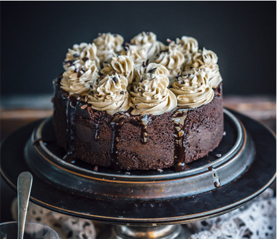
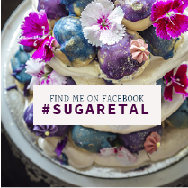

Coffee is definitely the solution to all my morning woes. Cake is probably the solution to ALL my woes.
At least many of them! So I figured out that the best way to deal with life and its woes is to make a coffee cake. Not just any cake but a very rich, intensely coffee-ish cake. This Mocha Mud cake has been topped with Coffee Buttercream and drizzled with Mocha sauce. If you are crazy for coffee, this is your cake.

COFFEE LOVERS CAKE
30|10|2017
30|10|2017

It’s Halloween tomorrow and I am just not guilty for making a creepy looking something. But everyone seems to be enjoying it and coming up with both scary and cute creations. I cannot make a single spooky
treat to save my life and since I was feeling quite left out, I thought this cake was somewhat more apt to share at this time than my floral creations. Tall, dark, handsome:-) Now tell me is it freaking you out? No? Great! That was not my intention anyway. But the taste will. It is so freaking good!
treat to save my life and since I was feeling quite left out, I thought this cake was somewhat more apt to share at this time than my floral creations. Tall, dark, handsome:-) Now tell me is it freaking you out? No? Great! That was not my intention anyway. But the taste will. It is so freaking good!
Pour chocolate mixture into a large bowl. Add sugar and egg, and use a wire balloon whisk to whisk
until well combined. Sift flours over chocolate mixture and stir with the whisk until well combined.
Pour into prepared pan. Bake in preheated oven for 1 1/4 hours or until crumbs cling to a skewer inserted
into the centre of the cake (cover with non-stick baking paper halfway through cooking if it browns too quickly). Remove from oven and set aside to cool to room temperature.
until well combined. Sift flours over chocolate mixture and stir with the whisk until well combined.
Pour into prepared pan. Bake in preheated oven for 1 1/4 hours or until crumbs cling to a skewer inserted
into the centre of the cake (cover with non-stick baking paper halfway through cooking if it browns too quickly). Remove from oven and set aside to cool to room temperature.
Mocha Mud cake
Makes a 6 inch round cake
Makes a 6 inch round cake
- 250g butter, chopped
- 200 g good-quality dark
chocolate, coarsely chopped - 11/4 cup freshly brewed
strong coffee (or 1 tbsp
instant coffee powder
dissolved 11/4 cup warm
water)
- 11/4 cup castor sugar
(or more depending on
the strength of the coffee
you are using) - 2 eggs, lightly whisked
- 1 cup self-raising flour
- 1 cup plain flour

Facebook